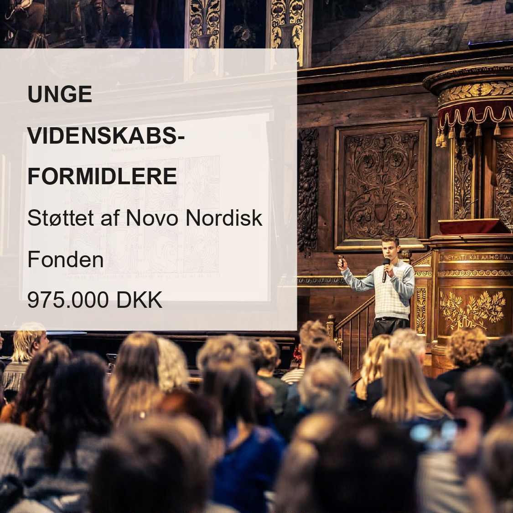
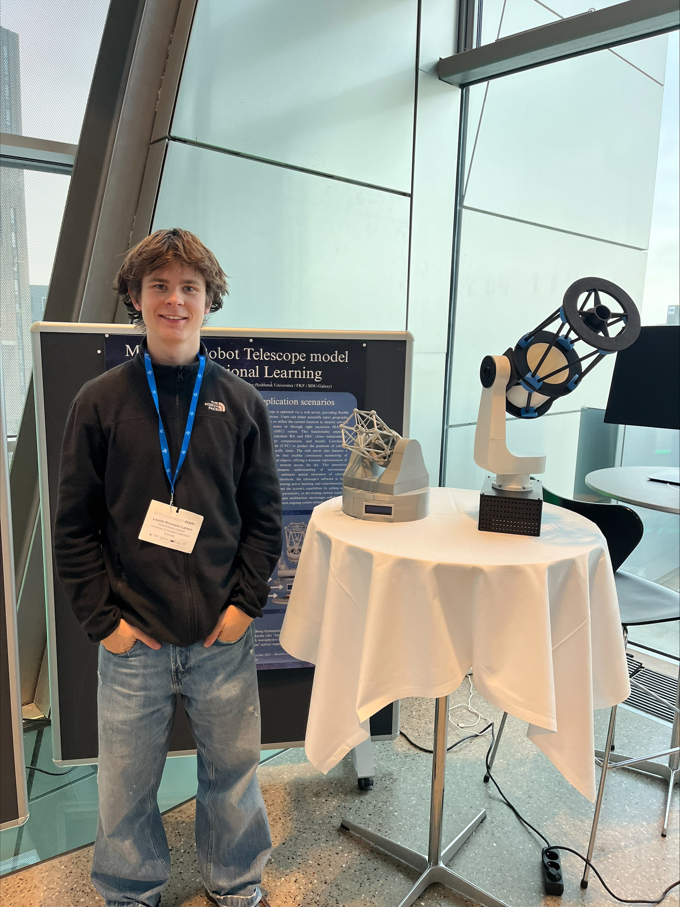

Robotics engineering student
Laurits Kromann Larsen
Robotics
I'm a dedicated and creative engineering student with several years of experience from projects and research in the natural sciences, artificial intelligence and robotics. I love designing, programming and developing solutions that turn ideas into reality — and making complex technology accessible and understandable.

01 — A journey in engineering & research
Selected highlights




02 — Career & engagement
Experience
2025 — present
Student assistant — robotic telescope
Aarhus University
Developing a robotic-telescope model of the FUT telescope for Aarhus University. The work combines mechanical design, electronics and control into a working demonstration model used for outreach and teaching.
2025 — present
Aug 2025 — present
Co-founder, board member & active member
Unge Formidlere (UVF)
Co-founder of Unge Formidlere — a national association where young people communicate science and technology to other young people. I serve on the board and am an active member of the day-to-day work.
2025 — present
Student club under SDU's DreamLab, building a combat robot for Robonexus in Saudi Arabia. I have been part of the project from the start and have contributed throughout — mechanical design, electronics, programming and project management. More on SDU →
2022 — 2024
Designer
3D Actions
3D design and product development.
03 — What I build
Selected projects

2025 · Aarhus University
Robotic telescope — FUT model
A motorised model of the FUT telescope driven by a Raspberry Pi. Used for outreach and as a platform for further extensions of the telescope model.
2025
Robotic telescope in motion
Demonstration of the robotic-telescope model scanning the sky via stepper motors driven by a Raspberry Pi.
2025
Ball on plate — PID control
A system that balances a ball on a plate using computer vision, PID control and stepper motors driven by a Raspberry Pi. A side project from before starting at SDU.
2025 — present · SDU
SDU Robot Warriors — combat robot
As team lead and co-founder I help design, program and build a combat robot for Robonexus 2026 in Saudi Arabia. The project spans mechanics, electronics, software and team leadership.
2023
Research — loss landscapes in neural networks
Quantitative analysis of the loss landscape of neural networks with Sigmoid, ReLU and Leaky-ReLU activation functions. Presented at Unge Forskere Senior 2024 and Projekt Forskerspirer.
04 — Recognition
Awards
- 2024Science Scholarship — Svendborg Gymnasium
- 2024Unge Forskere Senior — 3rd place, Physical Science
- 2023Projekt Forskerspirer — 1st prize, science
05 — Outreach
Talks & conferences
- 2026Unge Forskere Senior, jury — awarded the Novo Nordisk Foundation science communication prize
- 2025Space conference Aalborg — planned poster & demonstration of the robotic telescope and extended FUT model
- 2025ADAM conference — poster presentation of the robotic telescope
- 2024Unge Forskere Senior, finals — Copenhagen
- 2023Projekt Forskerspirer — presentation in Copenhagen
06 — Academic background
Education
BSc — robotics engineering
University of Southern Denmark (SDU)
2025 — present
Robotics with a focus on mechanics, software, control theory and artificial intelligence. Current GPA: 12.0.
Upper-secondary — Maths / Physics / Chemistry
Svendborg Gymnasium
2022 — 2024
GPA 11.5. Recipient of the Science Scholarship 2024. Completed nine science camps at Sciencetalenter in Sorø and ATU (the Academy for Talented Youth).
07 — Say hi
Contact
I'm always interested in talking with people working on robotics, AI, space research or science communication.
Phone
LinkedIn
Location
Odense, Denmark